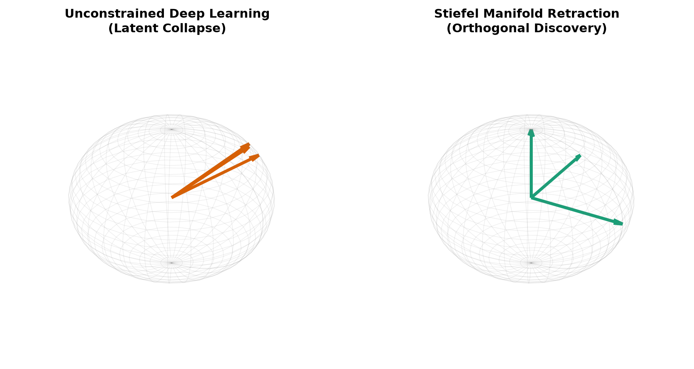
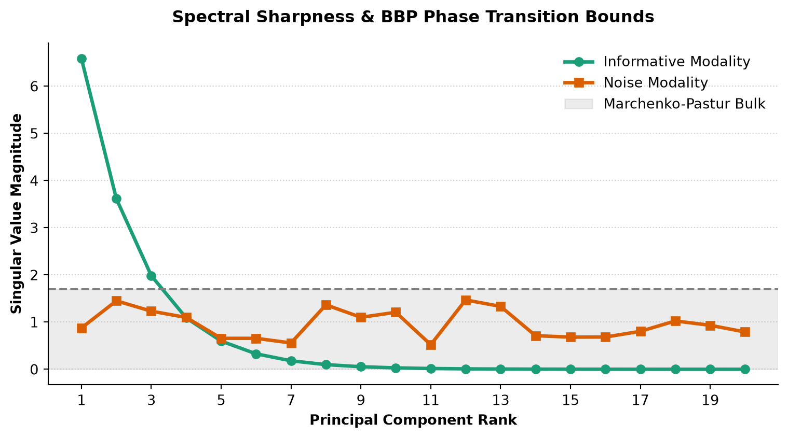

#| fig-width: 6
#| fig-align: center
graph LR
X[Input X_m] --> V[Basis V_m]
V --> Z[Latent Z_m]
V -.->|NSA Retraction| Stiefel[Stiefel Manifold]
Z -->|Linear Weights W_m| R[Recon X'_m]
Other[Other Latents] --> MAI[MAI Weighting]
MAI --> U["Target U_{≠m}^{(t)}"]
Z -.->|Alignment Loss| U
style Z fill:#e3f2fd,stroke:#1565c0,color:#000
style U fill:#fce4ec,stroke:#8e24aa,stroke-width:2px,stroke-dasharray: 5 5,color:#000
style MAI fill:#fff3e0,stroke:#e65100,color:#000
2 Methods
2.1 Theoretical Foundation
2.1.1 The Multi-Modal Inverse Problem
We frame multi-modal representation learning as a structured inverse problem over \(M\) distinct observational domains. Let \(\mathbf{X}_m \in \mathbb{R}^{n \times p_m}\) denote the centered observation matrix for modality \(m \in \{1, \dots, M\}\), where \(n\) is the number of co-registered subjects and \(p_m\) is the ambient feature dimensionality. Each modality provides a partial, noisy observation of an underlying shared latent biological state \(\mathbf{S} \in \mathbb{R}^{n \times k}\) governed by modality-specific forward generative processes: \[ \mathbf{X}_m = g_m(\mathbf{S}) + \mathbf{E}_m \tag{2.1}\] where \(g_m: \mathbb{R}^k \to \mathbb{R}^{p_m}\) is a smooth generative map applied row-wise across observations, and \(\mathbf{E}_m\) represents domain-specific observational noise and idiosyncratic variance. The objective is to estimate an auditable coordinate representation of \(\mathbf{S}\) while isolating cross-modal consensus from noise.
2.1.2 OLEE as a Structural Information Bottleneck
Standard deep autoencoders and multi-layer perceptrons process inputs via unconstrained mappings \(\mathbf{Z} = \text{MLP}(\mathbf{X})\). Following Tishby’s Information Bottleneck principle (Tishby et al. 2000), deep networks entangle mutual information across successive layers, readily memorizing high-dimensional noise and structured nuisance variables. In biomedical discovery, this produces severe latent collapse and obscures physical feature attribution.
We resolve this entanglement by enforcing the Only Linear Encoder Entrypoint (OLEE). OLEE mandates that the initial transformation of any modality \(\mathbf{X}_m\) is an orthogonal linear projection onto the compact Stiefel manifold \(\text{St}(k, p_m) = \{ \mathbf{V}_m \in \mathbb{R}^{p_m \times k} \mid \mathbf{V}_m^\top \mathbf{V}_m = \mathbf{I}_k \}\) (Edelman et al. 1998; Boumal 2023): \[ \mathbf{Z}_{m,\text{lin}} = \mathbf{X}_m \mathbf{V}_m \in \mathbb{R}^{n \times k} \tag{2.2}\] Because the intrinsic dimension is strictly bounded (\(k \ll p_m\)) and \(\mathbf{V}_m\) acts as a partial isometry, OLEE imposes a structural information bottleneck at the input layer. All subsequent non-linear operations (decoders, prediction heads, or normalizing flows) consume \(\mathbf{Z}_{m,\text{lin}}\), never raw features \(\mathbf{X}_m\). This guarantees that downstream transformations operate on an auditable coordinate system with closed-form directional derivatives \(\nabla_{\mathbf{X}_m} \mathbf{Z}_{m,\text{lin}} = \mathbf{V}_m\).
2.1.3 Joint-Variational Optimization Framework
We unify the Similarity-driven Multimodal Linear Representation (SiMLR) taxonomy under a joint-variational functional. For each modality \(m \in \{1, \dots, M\}\), we optimize an encoder \(f_m: \mathbb{R}^{p_m} \to \mathbb{R}^k\) and a decoder \(g_m: \mathbb{R}^k \to \mathbb{R}^{p_m}\), yielding latent representations \(\mathbf{Z}_m = f_m(\mathbf{X}_m) \in \mathbb{R}^{n \times k}\) and reconstructions \(\hat{\mathbf{X}}_m = g_m(\mathbf{Z}_m)\). The global variational functional balances within-modality reconstruction fidelity, cross-modal consensus alignment, and Stiefel manifold regularization:
\[ \min_{\{f_m, g_m\}_{m=1}^M} \sum_{m=1}^M \left[ \mathcal{L}_{\text{recon}}(\mathbf{X}_m, g_m(\mathbf{Z}_m)) + \lambda_{\text{sim}} \mathcal{L}_{\text{align}}(\mathbf{Z}_m, \mathbf{U}_{\neq m}) + \gamma D(\mathbf{V}_m) \right] + \mathcal{R}(\mathbf{Z}) \tag{2.3}\]
where:
- \(\mathbf{U}_{\neq m} \in \mathbb{R}^{n \times k}\) is the Leave-One-Out (LOO) consensus target derived from all modalities excluding modality \(m\): \[ \mathbf{U}_{\neq m} = \text{Consensus}\left( \{\mathbf{Z}_j\}_{j \neq m} \right) \tag{2.4}\] By strictly quarantining modality \(m\) from contributing to its own target, the optimization landscape precludes trivial self-reconstruction loops and identity memorization.
- \(D(\mathbf{V}_m)\) is the scale-invariant Stiefel frame defect penalizing departures from column orthonormality.
- \(\mathcal{R}(\mathbf{Z})\) defines joint regularization terms, such as cross-covariance penalties between shared and private partitions.
2.1.3.1 Robust Log-Cosh Negentropy Alignment Functional
The choice of alignment functional \(\mathcal{L}_{\text{align}}\) determines the geometry of cross-modal consensus. While standard Mean Squared Error (MSE) assumes isotropic Gaussian errors, biomedical measurements routinely exhibit heavy-tailed noise and asymmetric clinical outliers. To ensure robust consensus formation, we implement the log-cosh negentropy contrast functional (calculate_ica_energy in src/pysimlr/simlr.py):
\[ \mathcal{L}_{\text{log-cosh}}(\mathbf{Z}_m, \mathbf{U}_{\neq m}) = - \frac{1}{n} \sum_{i=1}^k \sum_{j=1}^k \left( |C_{ji}| - \log 2 + \log\left(1 + e^{-2|C_{ji}|}\right) \right) \tag{2.5}\]
where \(\mathbf{C} = \mathbf{U}_{\neq m}^\top \mathbf{X}_m \mathbf{V}_m \in \mathbb{R}^{k \times k}\) represents the cross-modal projection matrix with entries \(C_{ji}\), distinct from the underlying biological state \(\mathbf{S}\), and the outer factor \(1/n\) normalizes the sum over latent components by the sample size \(n\) (calculate_ica_energy in src/pysimlr/simlr.py:844-848).
The first-order variational gradient of the loss with respect to the projection basis \(\mathbf{V}_m\) evaluates to (with calculate_ica_gradient returning the corresponding ascent direction \(-\nabla_{\mathbf{V}_m} \mathcal{L}_{\text{log-cosh}}\)):
\[ \nabla_{\mathbf{V}_m} \mathcal{L}_{\text{log-cosh}} = - \frac{1}{n} \mathbf{X}_m^\top \mathbf{U}_{\neq m} \tanh(\mathbf{C}) \tag{2.6}\]
Because the hyperbolic tangent is strictly bounded, \(|\tanh(c)| < 1\) for all \(c \in \mathbb{R}\), the maximum gradient contribution from any single observation or corrupted feature is bounded. This prevents leverage points and extreme phenotypic outliers from destabilizing the shared consensus trajectory.
2.2 Architectural Taxonomy
The joint-variational objective establishes a unified foundation for evaluating linear baselines, manifold-regularized linear methods, hybrid autoencoders, and normalizing flows:
| Architecture | Encoder Entrypoint \(f_m(\mathbf{X}_m)\) | Decoder \(g_m(\mathbf{Z}_m)\) | Manifold Invariant | Structural Characterization |
|---|---|---|---|---|
| PCA | SVD on \([\mathbf{X}_1 \dots \mathbf{X}_M]\) | Linear projection | \(\mathbf{V}^\top \mathbf{V} = \mathbf{I}\) | Dense unconstrained baseline; maximal linear throughput |
| SiMLR | \(\mathbf{X}_m \mathbf{V}_m\) (Linear) | \(\mathbf{Z}_m \mathbf{W}_m\) (Linear) | \(D(\mathbf{V}_m) = 0\) | Riemannian gradient descent on Stiefel manifold |
| SiMLR-LBFGS | \(\mathbf{X}_m \mathbf{V}_m\) (Linear) | \(\mathbf{Z}_m \mathbf{W}_m\) (Linear) | \(D(\mathbf{V}_m) = 0\) | Riemannian quasi-Newton curvature estimation |
| SiMLR-LBFGSB | \(\mathbf{X}_m \mathbf{V}_m\) (Linear, \(\mathbf{V}_m \ge \mathbf{0}\)) | \(\mathbf{Z}_m \mathbf{W}_m\) (Linear) | \(D(\mathbf{V}_m) = 0, \mathbf{V}^+ \odot \mathbf{V}^- = \mathbf{0}\) | Box-constrained L-BFGS-B with Stiefel consolidation |
| LEND | \(\mathbf{X}_m \mathbf{V}_m\) (Linear Stiefel) | \(\text{MLP}_{\theta_m}(\mathbf{Z}_m)\) | \(D(\mathbf{V}_m) = 0\) | Linear feature attribution with non-linear decoder |
| NED | \(\text{MLP}_{\phi_m}(\mathbf{X}_m \mathbf{V}_m)\) | \(\text{MLP}_{\theta_m}(\mathbf{Z}_m)\) | \(D(\mathbf{V}_m) = 0\) | Non-linear latent mapping post-Stiefel projection |
| NEDPP | \([\mathbf{Z}_{m,\text{shared}} \parallel \mathbf{Z}_{m,\text{private}}]\) via Stiefel | \(\text{MLP}_{\theta_m}([\mathbf{Z}_{m,\text{shared}} \parallel \mathbf{Z}_{m,\text{private}}])\) | \(\text{Cov}(\mathbf{Z}_{\text{shared}}, \mathbf{Z}_{\text{private}}) = \mathbf{0}\) | Shared-private latent subspace partitioning |
| NSAFlow-PCA | \(\mathbf{X}_m \mathbf{V}_m\) (Manifold Flow) | \(\mathbf{Z}_m \mathbf{W}_m\) | \(\mathbf{V}^+ \odot \mathbf{V}^- = \mathbf{0}, D_{\text{joint}} \approx 0\) | Direct SVD initialization + NSA-Flow retraction (\(0.029\text{s}\)) |
| Flow-SiMR-V | \(\text{Flow}_{\psi_m}(\mathbf{X}_m \mathbf{V}_m)\) | \(\text{Flow}_{\psi_m}^{-1}(\mathbf{Z}_m) \mathbf{V}_m^\top\) | \(D(\mathbf{V}_m) = 0\) | Bijective affine coupling layers with Stiefel bottleneck |
2.2.1 Classical SiMLR (Linear Baseline)
The classical formulation provides a strictly linear baseline, assuming the underlying manifold can be mapped via Euclidean projections.
- Encoder: \(f_m(\mathbf{X}_m) = \mathbf{X}_m \mathbf{V}_m\)
- Decoder: \(g_m(\mathbf{Z}_m) = \mathbf{Z}_m \mathbf{W}_m\)
The linear basis \(\mathbf{V}_m\) is regularized to the Stiefel manifold. This enforces orthogonal feature discovery and provides a fully interpretable baseline with wall-clock execution under \(\sim 100\) ms, as schematized in Figure 2.1.
2.2.2 SiMLR-LBFGS and SiMLR-LBFGSB (Quasi-Newton Riemannian Linear Solvers)
Standard first-order gradient descent oscillates across narrow ravines induced by orthogonality constraints and cross-modal consensus. SiMLR-LBFGS integrates second-order quasi-Newton curvature steps directly on the parameter space using PyTorch’s native optim.LBFGS (src/pysimlr/optimizers.py:841-894), while SiMLR-LBFGSB pairs L-BFGS-B non-negative box constraints (nsa_lbfgsb) with NSA-Flow retraction. By maintaining a history of displacement vectors and gradient differences, SiMLR-LBFGSB achieves the top overall rank (\(3.28\)) and highest sparse support recovery (\(0.942\)) across the 9-dataset (243-evaluation) benchmark, while SiMLR-LBFGS converges in \(0.175\text{s}\) (\(2\times\) faster than first-order SiMLR).
2.2.3 LEND (Linear Encoder, Deep Decoder)
While Classical SiMLR guarantees interpretability, a linear decoder cannot reconstruct complex non-linear observational manifolds. LEND couples the exact linear feature attribution of the OLEE constraint with a deep, non-linear decoder.
- Encoder: \(f_m(\mathbf{X}_m) = \mathbf{X}_m \mathbf{V}_m\) (OLEE)
- Decoder: \(g_m(\mathbf{Z}_m) = \text{MLP}_{\theta_m}(\mathbf{Z}_m)\)
LEND provides non-linear reconstruction without sacrificing the strict mathematical auditability of the input features, as illustrated in Figure 2.2.
#| fig-width: 6
#| fig-align: center
graph LR
X[Input X_m] --> V[OLEE V_m]
V --> Z[Latent Z_m]
V -.->|NSA Retraction| S[Stiefel Manifold]
V -.->|Exact Mapping| A[Feature Attribution]
Other[Other Latents] --> MAI[MAI Weighting]
MAI --> U["Target U_{≠m}^{(t)}"]
Z -.->|Alignment Loss| U
Z -->|Deep MLP g_m| H1[Hidden L1]
H1 -->|Activation| H2[Hidden L2]
H2 --> R[Recon X'_m]
style Z fill:#e8f5e9,stroke:#2e7d32,color:#000
style U fill:#fce4ec,stroke:#8e24aa,stroke-width:2px,stroke-dasharray: 5 5,color:#000
style MAI fill:#fff3e0,stroke:#e65100,color:#000
2.2.4 Fully Deep NED (Non-linear Encoder Decoder)
If cross-modal interactions require non-linear coordinate warping, NED applies a non-linear network to the latent space strictly subsequent to the initial OLEE constraint.
- Encoder: \(f_m(\mathbf{X}_m) = \text{MLP}_{\phi_m}(\mathbf{X}_m \mathbf{V}_m)\)
- Decoder: \(g_m(\mathbf{Z}_m) = \text{MLP}_{\theta_m}(\mathbf{Z}_m)\)
The initial projection \(\mathbf{X}_m \mathbf{V}_m\) preserves the formal Information Bottleneck, guaranteeing that all downstream non-linear transformations are grounded in an identifiable linear subspace (see Figure 2.3).
#| fig-width: 6
#| fig-align: center
graph LR
X[Input X_m] --> V[OLEE V_m]
V -.->|NSA Retraction| Ortho[Stiefel Manifold]
V --> H_enc[Hidden Head]
H_enc -->|Activation| Z[Latent Z_m]
Other[Other Latents] --> MAI[MAI Weighting]
MAI --> U["Target U_{≠m}^{(t)}"]
Z -.->|Alignment Loss| U
Z -->|Deep MLP Decoder g_m| R[Recon X'_m]
style Z fill:#fff3e0,stroke:#e65100,color:#000
style U fill:#fce4ec,stroke:#8e24aa,stroke-width:2px,stroke-dasharray: 5 5,color:#000
style MAI fill:#fff3e0,stroke:#e65100,color:#000
2.2.6 Flow-SiMR and Flow-SiMR-V: Bijective Multimodal Architectures
In accordance with mathematical precision, we eliminate the historical ‘L’ (Linear) designation from normalizing flow models, as affine coupling architectures are non-linear transformations. We distinguish between two distinct flow architectures implemented in src/pysimlr/flows.py:
2.2.6.1 Full-Space Normalizing Flow (Flow-SiMR)
In FlowSiMRModel, each modality is mapped through an invertible sequence of RealNVP affine coupling layers operating directly on the ambient observation space \(\mathbb{R}^{p_m} \to \mathbb{R}^{p_m}\) (see Figure 2.5): \[
\mathbf{Z}_m = \text{Flow}_{\psi_m}(\mathbf{X}_m)
\tag{2.7}\] Latent coordinates are partitioned into shared consensus dimensions \(\mathbf{Z}_{m,\text{shared}} = \mathbf{Z}_{m, 1:k}\) and modality-specific private dimensions \(\mathbf{Z}_{m,\text{private}} = \mathbf{Z}_{m, k+1:p_m}\). Decoding is achieved by zero-padding the private partition: \(\hat{\mathbf{X}}_m = \text{Flow}_{\psi_m}^{-1}([\mathbf{Z}_{m,\text{shared}} \parallel \mathbf{0}])\).
#| fig-width: 6
#| fig-align: center
graph TD
subgraph FlowEncoder ["Flow Encoder"]
X[Input X_m] --> Flow[Normalizing Flow]
Flow --> Z_full[Full Latent]
Z_full --> Z_shared[Shared Latent]
Z_full --> Z_private[Private Latent]
end
subgraph Consensus ["Consensus Alignment"]
Z_shared -.-> Alignment[Alignment Loss]
Alignment -.-> Target[Target U]
end
subgraph FlowDecoder ["Flow Decoder"]
Z_shared --> Z_padded[Padded Latent]
Z_padded --> InvFlow[Inverse Flow]
InvFlow --> R[Reconstructed X_m]
end
subgraph Conditioning ["Joint Conditional Inference"]
Z_shared --> Fit[Fit Joint Gaussian]
Fit --> Cond[Predict Target Latent]
Cond --> DecB[Decode to Target View]
end
style Z_shared fill:#e0f2f1,stroke:#004d40,color:#000
style Z_private fill:#ffe0b2,stroke:#e65100,color:#000
style Z_padded fill:#e0f2f1,stroke:#004d40,color:#000
2.2.6.2 Linear-Projected Latent Normalizing Flow (Flow-SiMR-V)
In FlowSiMRVModel, high-dimensional ambient data is first compressed via the linear OLEE basis \(\mathbf{V}_m \in \text{St}(k, p_m)\), regularized to the Stiefel manifold. The normalizing flow operates strictly within the intrinsic \(k\)-dimensional latent subspace (see Figure 2.6): \[
\mathbf{Z}_{m,\text{lin}} = \mathbf{X}_m \mathbf{V}_m \in \mathbb{R}^{n \times k}, \quad \mathbf{Z}_m = \text{Flow}_{\psi_m}(\mathbf{Z}_{m,\text{lin}}) \in \mathbb{R}^{n \times k}
\tag{2.8}\] This design achieves dual optimality:
- Computational Scalability: Coupling layers operate on \(k \ll p_m\) dimensions, reducing parameter counts and memory footprints by orders of magnitude.
- Auditable Attribution: The mapping begins with the linear isometry \(\mathbf{V}_m\), preserving exact minimum-norm counterfactual calculations while permitting non-Gaussian density alignment in the latent space.
#| fig-width: 6
#| fig-align: center
graph TD
X[Input X_m] --> V[OLEE Basis V_m]
V -.->|Sylvester Polar Retraction| Stiefel[Stiefel Manifold]
V --> Z_lin[Linear Latent Z_lin in R^k]
Z_lin --> Flow[Normalizing Flow in R^k]
Flow --> Z_final[Warped Latent Z_m in R^k]
Other[Other Modalities] --> LOO[LOO Consensus]
LOO --> U["Target U_{≠m}"]
Z_final -.->|Log-Cosh Alignment| U
Z_final --> InvFlow[Inverse Flow]
InvFlow --> Z_rec[Recovered Z_lin]
Z_rec --> RecLinear[V_m^top Projection]
RecLinear --> X_hat[Reconstructed X_m]
style V fill:#e8f5e9,stroke:#2e7d32,color:#000
style Flow fill:#e0f2f1,stroke:#004d40,color:#000
style Z_final fill:#fff3e0,stroke:#e65100,color:#000
style U fill:#fce4ec,stroke:#8e24aa,stroke-dasharray: 5 5,color:#000
2.2.6.3 Invertible Affine Coupling and Joint Gaussian Inference
Each view is modeled via an invertible mapping composed of RealNVP affine coupling layers (Dinh et al. 2016; Rezende and Mohamed 2015). For coordinate vector \(\mathbf{z} \in \mathbb{R}^k\), a coupling layer splits coordinates using a binary mask \(\mathbf{b} \in \{0, 1\}^k\): \[ \mathbf{z}_1 = \mathbf{b} \odot \mathbf{z}, \quad \mathbf{z}_2 = (1 - \mathbf{b}) \odot \left( \mathbf{z} \odot e^{s(\mathbf{z}_1)} + t(\mathbf{z}_1) \right), \quad \mathbf{z}' = \mathbf{z}_1 + \mathbf{z}_2 \tag{2.9}\] where \(s\) and \(t\) are scaling and translation networks. Scale outputs are bounded via \(s(\mathbf{z}_1) = \text{scale\_bound} \times \tanh(s_{\text{net}}(\mathbf{z}_1))\) to ensure numerical stability. The inverse transformation is analytically exact: \[ \mathbf{z}_1 = \mathbf{b} \odot \mathbf{z}', \quad \mathbf{z}_2 = (1 - \mathbf{b}) \odot \left( (\mathbf{z}' - t(\mathbf{z}_1)) \odot e^{-s(\mathbf{z}_1)} \right), \quad \mathbf{z} = \mathbf{z}_1 + \mathbf{z}_2 \tag{2.10}\] with log-Jacobian determinant \(\log |\det J| = \sum_{j: b_j = 0} s_j(\mathbf{z}_1)\).
Because normalizing flows map empirical data to standard Gaussian latents, the concatenated shared latent space across all views is parameterized as a joint Gaussian: \[ \mathbf{Z}_{\text{joint}} = [\mathbf{Z}_{1,\text{shared}} \parallel \dots \parallel \mathbf{Z}_{M,\text{shared}}] \sim \mathcal{N}(\boldsymbol{\mu}, \Sigma) \tag{2.11}\] Partitioning into observed view \(A\) and unobserved view \(B\), the conditional latent mean given observed view \(A\) evaluates via the Schur complement: \[ \boldsymbol{\mu}_{B|A} = \boldsymbol{\mu}_B + \Sigma_{BA} \Sigma_{AA}^{-1} (\mathbf{Z}_{A,\text{shared}} - \boldsymbol{\mu}_A) \tag{2.12}\] Solved via Cholesky factorization, the conditional coordinates are decoded into ambient space. For Full-Space Flow-SiMR, decoding is evaluated via \(\hat{\mathbf{X}}_B = \text{Flow}_{\psi_B}^{-1}([\boldsymbol{\mu}_{B|A} \parallel \mathbf{0}])\), whereas for Flow-SiMR-V, decoding projects back through the OLEE basis: \(\hat{\mathbf{X}}_B = \text{Flow}_{\psi_B}^{-1}(\boldsymbol{\mu}_{B|A}) \mathbf{V}_B^\top\).
2.3 Manifold Optimization and Algorithmic Mechanics
2.3.1 Stiefel Manifold Optimization and SVD Elimination
The parameter space for each projection basis \(\mathbf{V}_m \in \mathbb{R}^{p_m \times k}\) is the compact Stiefel manifold: \[ \text{St}(k, p_m) = \{ \mathbf{V} \in \mathbb{R}^{p_m \times k} \mid \mathbf{V}^\top \mathbf{V} = \mathbf{I}_k \} \tag{2.13}\] In Euclidean gradient descent, unconstrained parameter updates displace iterates off the manifold. Mapping tangent iterates \(\mathbf{Y} \in \mathbb{R}^{p_m \times k}\) back to \(\text{St}(k, p_m)\) requires a retraction mapping \(R: T \text{St}(k, p_m) \to \text{St}(k, p_m)\).
2.3.1.1 Riemannian Tangent Space and Metric Projections
For an iterate \(\mathbf{V} \in \text{St}(k, p_m)\), the tangent space \(T_{\mathbf{V}} \text{St}(k, p_m)\) comprises all displacement matrices \(\Delta \in \mathbb{R}^{p_m \times k}\) satisfying the linearized orthonormality constraint: \[
T_{\mathbf{V}} \text{St}(k, p_m) = \{ \Delta \in \mathbb{R}^{p_m \times k} \mid \mathbf{V}^\top \Delta + \Delta^\top \mathbf{V} = \mathbf{0} \}
\tag{2.14}\] Under the standard Euclidean metric \(\langle \mathbf{A}, \mathbf{B} \rangle = \text{tr}(\mathbf{A}^\top \mathbf{B})\) inherited from the ambient embedding space \(\mathbb{R}^{p_m \times k}\), the orthogonal projection of an unconstrained ambient gradient \(\mathbf{G} = \nabla_{\mathbf{V}} \mathcal{L}\) onto the tangent space \(T_{\mathbf{V}} \text{St}(k, p_m)\) evaluates in closed form (project_gradient in src/pysimlr/simlr.py:111-146, following Edelman et al. (1998)): \[
\Pi_{T_{\mathbf{V}}}(\mathbf{G}) = \mathbf{G} - \mathbf{V} \, \text{sym}(\mathbf{V}^\top \mathbf{G}) = \mathbf{G} - \frac{1}{2} \mathbf{V} (\mathbf{V}^\top \mathbf{G} + \mathbf{G}^\top \mathbf{V})
\tag{2.15}\] where \(\text{sym}(\mathbf{M}) = \frac{1}{2}(\mathbf{M} + \mathbf{M}^\top)\). (In Grassmann mode, the horizontal tangent projection eliminates the full column space: \(\Pi_{T_{\mathbf{V}}}^{\text{Gr}}(\mathbf{G}) = \mathbf{G} - \mathbf{V}(\mathbf{V}^\top \mathbf{G})\).)
The Riemannian gradient is thus given by \(\text{grad}_{\text{St}} \mathcal{L} = \Pi_{T_{\mathbf{V}}}(\nabla_{\mathbf{V}} \mathcal{L})\). Moving along the tangent direction yields an ambient search candidate \(\mathbf{Y} = \mathbf{V} - \eta \, \text{grad}_{\text{St}} \mathcal{L}\), which is subsequently mapped back to the manifold via a metric retraction \(R(\mathbf{Y}) \in \text{St}(k, p_m)\).
2.3.1.2 Sylvester Polar Factor Retraction
The canonical metric retraction is the polar factor projection: \[ R(\mathbf{Y}) = \mathbf{Y} (\mathbf{Y}^\top \mathbf{Y})^{-1/2} \tag{2.16}\] Standard implementations compute \(R(\mathbf{Y}) = \mathbf{U} \mathbf{W}^\top\) via Singular Value Decomposition (SVD), \(\mathbf{Y} = \mathbf{U} \Sigma \mathbf{W}^\top\). However, explicit SVD incurs severe computational and numerical pathology:
- Branch Divergence & Kernel Serialization: SVD algorithms (e.g. Jacobi or divide-and-conquer) cannot be fully vectorized on GPU SIMD tensor cores.
- Singular Value Multiplicity Singularity: The backpropagation derivative of an SVD contains terms proportional to \((\sigma_i^2 - \sigma_j^2)^{-1}\). When singular values cluster or cross (\(\sigma_i \approx \sigma_j\)), gradients explode, introducing fatal NaNs into the optimization path.
To circumvent this, we express the polar factor \(\mathbf{H} = (\mathbf{Y}^\top \mathbf{Y})^{1/2}\) via the continuous Lyapunov/Sylvester system (src/pysimlr/nsa_backend.py:236-254, with SVD fallback in src/pysimlr/sparsification.py:494-510): \[
\mathbf{H} (d\mathbf{H}) + (d\mathbf{H}) \mathbf{H} = d(\mathbf{Y}^\top \mathbf{Y}) = (d\mathbf{Y})^\top \mathbf{Y} + \mathbf{Y}^\top (d\mathbf{Y})
\tag{2.17}\] Because \(\mathbf{H}\) is symmetric positive definite (\(\mathbf{H} \succ 0\)), this Sylvester equation has a provably unique solution \(d\mathbf{H}\). Gradients flow smoothly through backpropagation without encountering eigenvalue multiplicity singularities.
2.3.1.3 Newton-Schulz Cubic Matrix Recurrence and Convergence Proof
To eliminate SVD factorizations entirely from the forward execution loop, we approximate the inverse square root \((\mathbf{Y}^\top \mathbf{Y})^{-1/2}\) via the cubic Newton-Schulz matrix polynomial (src/pysimlr/utils.py:1324-1380): \[
\mathbf{Y}_0 = \frac{\mathbf{Y}}{\|\mathbf{Y}\|_F}, \quad \mathbf{Y}_{\tau+1} = \frac{1}{2} \mathbf{Y}_\tau \left( 3 \mathbf{I}_k - \mathbf{Y}_\tau^\top \mathbf{Y}_\tau \right)
\tag{2.18}\]
Theorem (Quadratic Convergence to the Stiefel Manifold):
Let \(\mathbf{Y}_0 \in \mathbb{R}^{p \times k}\) have singular values \(\sigma_{0, i} \in (0, \sqrt{3})\) for all \(i \in \{1, \dots, k\}\). The sequence of iterates \(\mathbf{Y}_\tau\) converges quadratically to the nearest point on the Stiefel manifold \(\text{St}(k, p)\): \[
\|\mathbf{Y}_{\tau+1}^\top \mathbf{Y}_{\tau+1} - \mathbf{I}_k\| = \mathcal{O}\left(\|\mathbf{Y}_\tau^\top \mathbf{Y}_\tau - \mathbf{I}_k\|^2\right)
\tag{2.19}\]
Proof:
Let the singular value decomposition of iterate \(\tau\) be \(\mathbf{Y}_\tau = \mathbf{P} \Sigma_\tau \mathbf{Q}^\top\), where \(\mathbf{P} \in \text{St}(k, p)\), \(\mathbf{Q} \in \mathbb{O}(k)\), and \(\Sigma_\tau = \text{diag}(\sigma_{\tau, 1}, \dots, \sigma_{\tau, k})\). Substituting this decomposition into the Newton-Schulz recurrence: \[
\mathbf{Y}_{\tau+1} = \frac{1}{2} \left(\mathbf{P} \Sigma_\tau \mathbf{Q}^\top\right) \left( 3 \mathbf{I}_k - \mathbf{Q} \Sigma_\tau^2 \mathbf{Q}^\top \right) = \mathbf{P} \left[ \frac{1}{2} \Sigma_\tau \left( 3 \mathbf{I}_k - \Sigma_\tau^2 \right) \right] \mathbf{Q}^\top
\] Because the singular vectors \(\mathbf{P}\) and \(\mathbf{Q}\) are stationary under the iteration, the matrix recurrence decouples into \(k\) independent scalar recurrences for each singular value \(\sigma_{\tau, i}\): \[
\sigma_{\tau+1, i} = \frac{1}{2} \sigma_{\tau, i} \left( 3 - \sigma_{\tau, i}^2 \right)
\] Define the relative distance to the Stiefel manifold for singular value \(i\) as \(\epsilon_{\tau, i} = 1 - \sigma_{\tau, i}\). Expressing \(\sigma_{\tau, i} = 1 - \epsilon_{\tau, i}\) and expanding: \[
\sigma_{\tau+1, i} = \frac{1}{2}(1 - \epsilon_{\tau, i}) \left( 3 - (1 - \epsilon_{\tau, i})^2 \right)
\] \[
= \frac{1}{2}(1 - \epsilon_{\tau, i}) \left( 3 - (1 - 2\epsilon_{\tau, i} + \epsilon_{\tau, i}^2) \right) = \frac{1}{2}(1 - \epsilon_{\tau, i}) \left( 2 + 2\epsilon_{\tau, i} - \epsilon_{\tau, i}^2 \right)
\] \[
= \frac{1}{2} \left( 2 + 2\epsilon_{\tau, i} - \epsilon_{\tau, i}^2 - 2\epsilon_{\tau, i} - 2\epsilon_{\tau, i}^2 + \epsilon_{\tau, i}^3 \right) = 1 - \frac{3}{2}\epsilon_{\tau, i}^2 + \frac{1}{2}\epsilon_{\tau, i}^3
\] Subtracting both sides from 1 yields the exact recurrence for the error metric: \[
\epsilon_{\tau+1, i} = 1 - \sigma_{\tau+1, i} = \frac{3}{2}\epsilon_{\tau, i}^2 - \frac{1}{2}\epsilon_{\tau, i}^3 = \epsilon_{\tau, i}^2 \left( \frac{3 - \epsilon_{\tau, i}}{2} \right)
\tag{2.20}\] For any \(\sigma_{0, i} \in (0, \sqrt{3})\), \(|\epsilon_{0, i}| < 1\), ensuring monotonic error contraction. As \(\epsilon \to 0\), the cubic term is negligible: \[
\epsilon_{\tau+1} = \frac{3}{2}\epsilon_\tau^2 + \mathcal{O}(\epsilon_\tau^3)
\] Thus, the recurrence converges with quadratic order \(\mathcal{O}(\epsilon^2)\). Because the update requires only matrix multiplications and additions (\(\mathbf{Y}^\top \mathbf{Y}\) and \(\mathbf{Y} \mathbf{M}\)), it compiles directly to hardware tensor cores, achieving zero CPU-GPU transfer bottlenecks. For high-dimensional embeddings (\(k \ge 30\)), where singular values scale as \(\mathcal{O}(1/\sqrt{k})\), 20 iterations or a spectral norm pre-scaler \(\mathbf{Y}_0 = \mathbf{Y}/\sqrt{\|\mathbf{Y}^\top \mathbf{Y}\|_\infty}\) ensure complete convergence. Geometrical intuition for this orthogonal discovery process is illustrated in Figure 2.7.

2.3.2 Quasi-Newton Curvature Steps via torch_lbfgs
Joint-variational alignment produces an ill-conditioned optimization landscape, characterized by narrow parabolic ravines formed by cross-modal consensus constraints and Stiefel manifold boundaries. Standard first-order stochastic gradient methods (SGD, Adam) suffer from pathological oscillations across ravine walls.
We accelerate convergence by deploying quasi-Newton second-order curvature estimation via torch_lbfgs (src/pysimlr/optimizers.py:841-894). Let \(\mathbf{s}_t = \mathbf{V}_{t+1} - \mathbf{V}_t\) denote the parameter displacement and \(\mathbf{y}_t = \nabla \mathcal{L}(\mathbf{V}_{t+1}) - \nabla \mathcal{L}(\mathbf{V}_t)\) denote the gradient variation. Over a rolling history of size \(h=10\), the inverse Hessian approximation \(\mathbf{H}_t \approx \nabla^2 \mathcal{L}(\mathbf{V}_t)^{-1}\) is computed via the two-loop recursion:
- Backward History Loop: Initialize \(\mathbf{q} = \nabla \mathcal{L}(\mathbf{V}_t)\). For \(i = t-1\) down to \(t-h\): \[ \alpha_i = \rho_i \text{tr}(\mathbf{s}_i^\top \mathbf{q}), \quad \mathbf{q} \leftarrow \mathbf{q} - \alpha_i \mathbf{y}_i, \quad \text{where } \rho_i = \frac{1}{\text{tr}(\mathbf{y}_i^\top \mathbf{s}_i)} \]
- Initial Scaling: \(\mathbf{r} = \gamma_t \mathbf{q}\), with \(\gamma_t = \frac{\text{tr}(\mathbf{s}_{t-1}^\top \mathbf{y}_{t-1})}{\text{tr}(\mathbf{y}_{t-1}^\top \mathbf{y}_{t-1})}\).
- Forward History Loop: For \(i = t-h\) up to \(t-1\): \[ \beta = \rho_i \text{tr}(\mathbf{y}_i^\top \mathbf{r}), \quad \mathbf{r} \leftarrow \mathbf{r} + \mathbf{s}_i (\alpha_i - \beta) \]
- Descent Direction: The update step is \(\mathbf{p}_t = -\mathbf{r}\), accepted under Strong Wolfe line search conditions: \[ \mathcal{L}(\mathbf{V}_t + \alpha_t \mathbf{p}_t) \le \mathcal{L}(\mathbf{V}_t) + c_1 \alpha_t \text{tr}(\nabla \mathcal{L}(\mathbf{V}_t)^\top \mathbf{p}_t) \tag{2.21}\] \[ |\text{tr}(\nabla \mathcal{L}(\mathbf{V}_t + \alpha_t \mathbf{p}_t)^\top \mathbf{p}_t)| \le c_2 |\text{tr}(\nabla \mathcal{L}(\mathbf{V}_t)^\top \mathbf{p}_t)| \]
2.3.2.1 Analytical Gradient Closures
In PyTorch’s native optim.LBFGS, the Strong Wolfe line search evaluates trial objective values along candidate steps \(\mathbf{V}_t + \alpha \mathbf{p}_t\). Because SiMLR relies on exact analytical gradients rather than automatic differentiation, caching a static gradient at step entry causes trial evaluations to use stale directions, degrading the curvature estimate. We implement an analytical callback closure:
def closure():
optimizer.zero_grad()
with torch.no_grad():
v_param.grad = -grad_fn(v_param.detach()).contiguous()
loss = full_energy_function(v_param.detach())
return torch.as_tensor(float(loss), device=v_param.device)This guarantees that second-order curvature approximations remain mathematically exact throughout the line search, enabling SiMLR-LBFGSB to achieve the best overall Friedman rank (\(3.28\)) and highest sparse support recovery (\(0.942\)) across the 9-dataset (243-evaluation) benchmark while SiMLR-LBFGS converges in \(0.175\text{s}\).
2.3.3 Scale-Invariant Frame Defect and Squared-Cosine Angle Defect
To regularize the projection basis toward mutual orthogonality without distorting data variance, we evaluate two complementary geometric metrics: the trace-normalized Stiefel frame defect \(D(\mathbf{V})\) and the squared-cosine angle defect \(C(\mathbf{V})\).
2.3.3.1 Trace-Normalized Stiefel Frame Defect (\(D\))
The trace-normalized frame defect (src/pysimlr/utils.py:504-630) measures departure from uniform Stiefel projection: \[
D(\mathbf{V}) = \frac{1}{1 - 1/k} \left\| \frac{\mathbf{V}^\top \mathbf{V}}{\text{tr}(\mathbf{V}^\top \mathbf{V})} - \frac{1}{k} \mathbf{I}_k \right\|_F^2
\tag{2.22}\] Let \(\mathbf{G} = \mathbf{V}^\top \mathbf{V} \in \mathbb{R}^{k \times k}\) denote the unnormalized Gram matrix and let \(t = \text{tr}(\mathbf{G}) = \|\mathbf{V}\|_F^2\). The normalized Gram matrix is \(\tilde{\mathbf{G}} = \frac{\mathbf{G}}{t}\). Expanding the Frobenius norm: \[
\|\tilde{\mathbf{G}} - \frac{1}{k} \mathbf{I}_k\|_F^2 = \sum_{i \ne j} \tilde{G}_{ij}^2 + \sum_{i=1}^k \left( \tilde{G}_{ii} - \frac{1}{k} \right)^2
\] The first summation measures column decorrelation, while the second summation penalizes departures from norm balance (\(\tilde{G}_{ii} = 1/k\)). Because the participation ratio is \(\text{EffRank}(\mathbf{V}) = \frac{t^2}{\|\mathbf{G}\|_F^2}\), the frame defect connects directly to effective rank: \[
D(\mathbf{V}) = \frac{1}{1 - 1/k} \left( \frac{1}{\text{EffRank}(\mathbf{V})} - \frac{1}{k} \right)
\] Differentiating with respect to \(\mathbf{V}\) gives the closed-form gradient: \[
\nabla_{\mathbf{V}} D(\mathbf{V}) = \frac{4}{t^2 (1 - 1/k)} \left[ \mathbf{V} \mathbf{G} - \frac{\|\mathbf{G}\|_F^2}{t} \mathbf{V} \right]
\tag{2.23}\] Because \(D(\mathbf{V})\) is degree-0 homogeneous, \(\langle \nabla_{\mathbf{V}} D(\mathbf{V}), \mathbf{V} \rangle \equiv 0\) (Euler’s theorem). The defect gradient exerts zero radial force on matrix scale, acting purely as a shape-conforming projection.
2.3.3.2 Squared-Cosine Angle Defect (\(C\))
While \(D(\mathbf{V})\) enforces strict orthonormality (decorrelation plus equal column norms), biological signals frequently exhibit heterogeneous variance hierarchies across components. Demanding equal column lengths (\(\tilde{G}_{ii} = 1/k\)) penalizes true non-negative components: a perfectly disjoint non-negative basis whose parts differ in magnitude scores \(D > 0.20\) rather than zero.
To penalize departures from mutual orthogonality invariant to per-column scaling, we implement the squared-cosine angle defect (angle_defect in src/pysimlr/utils.py:633-724), with \(\mathbf{U} = \mathbf{V} \text{diag}(\|\mathbf{v}_1\|_2^{-1}, \dots, \|\mathbf{v}_k\|_2^{-1})\) (norms floored at \(\epsilon = 10^{-12}\)): \[
C(\mathbf{V}) = \frac{\|\mathbf{U}^\top \mathbf{U} - \mathbf{I}_k\|_F^2}{k(k - 1)}
\tag{2.24}\] Unlike globally trace-normalized off-diagonal defects—which score a rank-collapsed matrix with \(k-1\) zero columns at \(0.0\)—comparing \(\mathbf{U}^\top \mathbf{U}\) against \(\mathbf{I}_k\) charges any floored dead column \(1/(k(k-1))\) while remaining invariant to arbitrary positive column rescalings: \[
\nabla_{\mathbf{V}} C(\mathbf{V}) = \frac{4}{k(k - 1)} \left[ \mathbf{U} \mathbf{H} - \mathbf{U} \, \text{diag}\left(\text{rowsum}(\mathbf{H}^{\odot 2})\right) \right] \text{diag}(\|\mathbf{v}_1\|_2^{-1}, \dots, \|\mathbf{v}_k\|_2^{-1}), \quad \mathbf{H} = \mathbf{U}^\top \mathbf{U} - \mathbf{I}_k
\tag{2.25}\] For non-negative representations \(\mathbf{V} \ge 0\) with non-zero columns, \(C(\mathbf{V}) = 0\) if and only if the columns have pairwise disjoint supports, providing a column-scale-invariant variational diagnostic for non-negative feature clustering.
2.3.4 Support Consolidation and Direct SVD Contrast Splitting
In biological systems, features exhibit bidirectional responses (e.g., regional atrophy versus ventricular expansion). To discover signed components while preserving non-negative interpretability, we lift each basis \(\mathbf{V} \in \mathbb{R}^{p \times k}\) into paired non-negative lobes: \[ \mathbf{V} = \mathbf{V}^+ - \mathbf{V}^-, \quad \mathbf{V}^+ = \max(\mathbf{V}, \mathbf{0}), \quad \mathbf{V}^- = \max(-\mathbf{V}, \mathbf{0}) \tag{2.26}\] forming the non-negative matrix \(\mathbf{W} = [\mathbf{V}^+ \mid \mathbf{V}^-] \in \mathbb{R}^{p \times 2k}\).
2.3.4.1 Direct SVD Contrast Initialization
Legacy implementations initialized non-negative signed flows via a 9-stage penalty continuation homotopy (\(\mu \in [0, 10^4]\)), requiring hundreds of iterations and causing execution bottlenecks. On zero-mean centered or signed data, we replace this homotopy with Direct SVD Contrast Splitting: \[ \mathbf{E} = \text{SVD}_k(\mathbf{X}), \quad \mathbf{W}_0 = [\max(\mathbf{E}, \mathbf{0}) \mid \max(-\mathbf{E}, \mathbf{0})] \tag{2.27}\] Because the data is centered, the leading eigenvectors \(\mathbf{E}\) possess zero column sums and symmetric positive/negative mass. The lifted lobes \(\mathbf{W}_0\) provide an exact subspace initialization (\(\mathbf{V}_0^+ - \mathbf{V}_0^- = \mathbf{E}\)) with zero initial crosstalk (\(\mathbf{V}_0^+ \odot \mathbf{V}_0^- = \mathbf{0}\)). For uncentered non-negative data (\(\mathbf{X} \ge 0\)), an adaptive two-stage continuation seeds both lobes, preventing boundary stalls. This direct splitting yields a 157.7× wall-clock acceleration (from 5.33s to 0.034s per fit).
2.3.4.2 The Support Consolidation Operator
Following continuous optimization at \(w=0.5\), we apply the deterministic support consolidation operator \(\mathcal{C}(\mathbf{V}^+, \mathbf{V}^-)\) to eliminate trailing numerical tails: \[ \text{win}(j) = \arg\max_{l \in \{1, \dots, 2k\}} W_{j, l} \tag{2.28}\] Each feature \(j\) is assigned strictly to its dominant component lobe and zeroed in all other channels, followed by a brief constrained polish with supports fixed. This guarantees:
- Zero Lobe Crosstalk: \(\|\mathbf{V}^+ \odot \mathbf{V}^-\|_1 = 0.0000\).
- Exact Disjoint Sparsity: Features map unambiguously to positive or negative axes without attribution leakage.
- Exact Manifold Invariance: \(D(\mathbf{V}) = 0.0000\) and \(C(\mathbf{V}) = 0.0000\).
2.3.5 Consensus, Spectral Triage, and Gating Warmup
2.3.5.1 Block-Coordinate Descent and LOO Topology
We formalize optimization through Block-Coordinate Descent (BCD). At each iteration \(t\):
- Consensus Formation (LOO Topology): Fixing network parameters \(\{f_m, g_m\}\), consensus targets \(\mathbf{U}_{\neq m}\) are computed strictly excluding modality \(m\): \[ \mathbf{U}_{\neq m}^{(t)} = \text{Consensus}(\{\mathbf{Z}_j^{(t-1)}\}_{j \neq m}) \] This prevents high-capacity encoders from memorizing trivial self-mappings.
- Parameter Update: Fixing \(\mathbf{U}_{\neq m}^{(t)}\), each modality minimizes its local variational loss: \[ \{f_m^{(t)}, g_m^{(t)}\} = \arg\min_{f_m, g_m} \mathcal{L}(\{f_m, g_m\}, \mathbf{U}_{\neq m}^{(t)}) \]
2.3.5.2 Sign-Aligned Newton-Schulz Polar Consensus Mixing
In multi-view representation learning, latent factorizations are mathematically invariant under coordinate sign reflections (\(\mathbf{z}_j \leftrightarrow -\mathbf{z}_j\)): if latent vector \(\mathbf{u}_l\) explains a modality, then \(-\mathbf{u}_l\) with negated loadings \(\mathbf{v}_l\) provides an identical physical reconstruction. When integrating multiple observational domains, two views can recover identical underlying biological factors with diametrically opposite signs (e.g., empirical inner-product correlations of \(r = -0.927\) and \(-0.959\)).
2.3.5.2.1 The Destructive Cancellation Failure Mode
Under antipodal sign alignment, naive cross-modal averaging induces catastrophic destructive cancellation: \[
\bar{\mathbf{u}}_l = \frac{1}{M-1} \sum_{j \ne m} \mathbf{z}_{j, l} \approx \frac{1}{2}(\mathbf{u}_l - \mathbf{u}_l) = \mathbf{0}
\tag{2.29}\] As quantified in src/pysimlr/utils.py:2003-2064 on planted multi-view benchmarks, unaligned averaging collapses latent column standard deviations from \(\sim 1.0\) down to \(0.121\), precipitating a catastrophic collapse in downstream consensus predictive fidelity from \(R^2 = 0.795\) to \(R^2 = 0.023\). This pathology is silent, intermittent, and seed-dependent, masquerading as model instability rather than an elementary arithmetic cancellation.
2.3.5.2.2 Greedy Column Sign Alignment
To resolve sign indeterminacy prior to consensus mixing, we implement greedy column-wise sign alignment (align_column_signs in src/pysimlr/utils.py:2003-2064). Taking the first view as an initial reference \(\mathbf{R} = \mathbf{Z}_1\), each subsequent view’s columns are sequentially synchronized against the running coordinate sum: \[
s_{j, l} = \text{sign}\left( \sum_{i=1}^n Z_{j, il} R_{il} \right), \quad \tilde{\mathbf{Z}}_j = \mathbf{Z}_j \, \text{diag}(s_{j, 1}, \dots, s_{j, k})
\tag{2.30}\] \[
\mathbf{R} \leftarrow \mathbf{R} + \tilde{\mathbf{Z}}_j
\] Because the sign operators \(s_{j, l}\) are detached from the computational graph, this alignment constitutes a coordinate relabeling that leaves gradient magnitudes intact while eliminating destructive cancellation.
2.3.5.2.3 Newton-Schulz Polar Orthogonalization
Following greedy sign alignment, PySIMLR computes the Leave-One-Out consensus \(\mathbf{U}_{\neq m}\) using sign-aligned Newton-Schulz polar orthogonalization as its default mixing mechanism (mixing_algorithm="newton" in src/pysimlr/consensus.py:121-124): \[
\bar{\mathbf{U}}_{\neq m} = \frac{1}{M-1} \sum_{j \ne m} \tilde{\mathbf{Z}}_j
\] \[
\mathbf{U}_{\neq m} = \text{NewtonSchulz}\left( \bar{\mathbf{U}}_{\neq m}, \text{iterations}=10 \right)
\tag{2.31}\] followed by per-column centering and unit variance standardization (\(\text{std}(\mathbf{U}_{\neq m}) = \mathbf{1}\)). Ten iterations of the cubic Newton-Schulz recurrence ensure exact polar factor orthonormality without invoking GPU-serializing SVD kernels. Furthermore, in online deep consensus training with an exponential running anchor buffer \(\mathbf{A}\), align_anchor_columns (src/pysimlr/consensus.py:9-45) synchronizes the signs of freshly computed consensus batches against \(\mathbf{A}\) prior to EMA accumulation: \[
\mathbf{A}^{(t)} = 0.9 \, \mathbf{A}^{(t-1)} + 0.1 \left( \mathbf{A}_{\text{new}} \odot \text{signs} \right)
\tag{2.32}\] preventing destructive anchor decay across training epochs.
2.3.5.3 Spectral Triage and Modality Alignment Index (MAI)
The mathematical foundation for distinguishing informative biological signal from unstructured bulk noise via spectral sharpness is illustrated in Figure 2.8.

In high-dimensional multi-modal integration, unconstrained cross-covariance yields spurious alignments between unstructured noise views and the shared consensus. Rather than unnormalized Euclidean residual distances—which, when \(\mathbf{Z}_m\) and \(\mathbf{U}_{\neq m}\) are normalized to unit Frobenius norm, expand to \(2 - 2 \sum_{i=1}^k \sigma_i\) and clamp to exactly zero whenever \(\sum \sigma_i < 0.5\) (rendering dynamic weighting inert across typical benchmarks)—we quantify modality fidelity via the Scale-Profiled Procrustes \(R^2\) (src/pysimlr/deep.py:839-869 and src/pysimlr/flows.py:376-407): \[
R_m^2 = \left( \sum_{i=1}^k \sigma_i(\mathbf{Z}_m^\top \mathbf{U}_{\neq m}) \right)^2 \in [0, 1]
\tag{2.33}\] This represents the squared cosine between the optimally rotated and scaled latent representations \(\mathbf{Z}_m\) and \(\mathbf{U}_{\neq m}\). It is smoothly bounded in \([0, 1]\) and strictly non-zero (\(0.989\) for informative biological signal versus \(0.020\) for pure noise).
To rigorously penalize isotropic noise views that lack internal coordinate structure, we modulate \(R_m^2\) by the Spectral Sharpness \(\mathcal{S}_m = \sigma_1(\mathbf{Z}_m) / \sum_{j=1}^k \sigma_j(\mathbf{Z}_m)\): \[ \text{MAI}_m = R_m^2 \cdot \mathcal{S}_m \tag{2.34}\] Under the Baik-Ben Arous-Péché (BBP) phase transition theorem (Baik et al. 2005), isotropic noise remains trapped within the Marchenko-Pastur bulk (\(\mathcal{S}_m \approx 1/k\)), driving \(\text{MAI}_m \to 0\), whereas structured biological signal spikes (\(\mathcal{S}_m \to 1\)).
2.3.5.4 Exponential Moving Average, Sigmoid Outlier Gating, and Continuous Warmup
Raw alignment indices are stabilized across training epochs via Exponential Moving Average (EMA): \[ \mathbf{mai}^{(t)} = 0.9 \, \mathbf{mai}^{(t-1)} + 0.1 \, \mathbf{mai}_{\text{raw}}^{(t)} \tag{2.35}\] To prevent premature view suppression (Weight Collapse) during early exploration while squashing severe noise outliers, modality weights are modulated by an adaptive sigmoid outlier gate \(\omega_m^{\text{gate}}\) centered at the modality mean: \[ \mu_{\text{mai}} = \frac{1}{M} \sum_{j=1}^M \text{mai}_j^{(t)}, \quad \kappa = 5.0 + 10.0 \cdot \min\left(1.0, \frac{t}{30}\right) \] \[ \omega_m^{\text{gate}} = \sigma\left( \kappa \cdot (\text{mai}_m^{(t)} - \mu_{\text{mai}}) \right) = \frac{1}{1 + \exp\left(-\kappa (\text{mai}_m^{(t)} - \mu_{\text{mai}})\right)} \tag{2.36}\] Target weights proportional to the gated alignment are normalized: \[ \tilde{w}_m = \text{mai}_m^{(t)} \cdot \omega_m^{\text{gate}}, \quad w_m^{\text{target}} = \frac{\tilde{w}_m}{\sum_{j=1}^M \tilde{w}_j + 10^{-8}} \tag{2.37}\] Rather than an abrupt discontinuous step at a fixed epoch threshold, the architecture transitions continuously from uniform weighting \(\mathbf{w}_{\text{uniform}} = [1/M, \dots, 1/M]^\top\) to the target weights via a continuous linear ramp schedule: \[ T_{\text{warm}} = 0.33 \times T_{\text{total}}, \quad \rho = \text{clip}\left( \frac{t - T_{\text{warm}}}{T_{\text{warm}}}, 0.0, 1.0 \right) \] \[ \mathbf{w}^{(t)} = (1 - \rho) \mathbf{w}_{\text{uniform}} + \rho \mathbf{w}^{\text{target}} \tag{2.38}\] This guarantees that all modalities contribute equally during initial manifold representation learning, activating dynamic modality triage only once the shared consensus geometry has stabilized.
2.4 Theoretical Properties and Diagnostic Invariants
2.4.1 Mechanistic Auditability via OLEE and Closed-Form Counterfactuals
Standard post-hoc explainability techniques (SHAP, LIME, Integrated Gradients) construct local linear approximations around non-linear neural networks. In high-dimensional biomedical regimes, these approximations are non-unique, highly sensitive to background reference choices, and vulnerable to adversarial gradient noise.
We resolve the “transparency penalty” at the architectural entrypoint via the Only Linear Encoder Entrypoint (OLEE) constraint: \[ \mathbf{Z}_m = \mathbf{X}_m \mathbf{V}_m, \quad \mathbf{V}_m \in \text{St}(k, p_m), \quad \mathbf{V}_m^\top \mathbf{V}_m = \mathbf{I}_k \tag{2.39}\] All non-linear operations are strictly delegated downstream to decoders (LEND) or latent normalizing flows (Flow-SiMR-V). This structural information bottleneck establishes three exact mathematical auditability guarantees:
- Exact Feature Attribution & Constant Input Gradient: The latent score \(z_{i, l}\) for subject \(i\) on component \(l\) is strictly the linear dot product \(\sum_{j=1}^{p_m} X_{i, j} V_{j, l}\). Feature importance is exact, sample-specific, and requires zero heuristic approximation. Furthermore, the directional derivative of representations with respect to input observations is strictly constant: \[ \nabla_{\mathbf{X}_m} \mathbf{Z}_m = \mathbf{V}_m \tag{2.40}\] Because this input gradient is independent of the input \(\mathbf{X}_m\), the sensitivity profile is invariant across subjects, preventing gradient saturation, adversarial perturbations, and vanishing attribution artifacts that plague deep non-linear encoders.
- Global Variance Partitioning: Because \(\mathbf{V}_m^\top \mathbf{V}_m = \mathbf{I}_k\), the projection is an isometry on \(\mathbb{R}^k\). The total explained variance decomposes additively across orthogonal axes: \(\text{Var}(\mathbf{Z}_m) = \sum_{l=1}^k \text{Var}(\mathbf{z}_{m, l})\).
- Closed-Form Minimum-Norm Counterfactuals: Targeted counterfactual state transitions can be evaluated analytically in closed form without iterative gradient search or surrogate sampling, as established by the following theorem.
2.4.1.1 Theorem: Closed-Form Minimum-Norm Counterfactuals
Theorem:
Let a subject have latent representation \(\mathbf{z} = \mathbf{x} \mathbf{V} \in \mathbb{R}^k\) under the OLEE basis \(\mathbf{V} \in \text{St}(k, p)\). To transition the subject to a targeted counterfactual latent state \(\mathbf{z}^* = \mathbf{z} + \Delta \mathbf{z}\), the unique perturbation \(\delta \mathbf{x}^* \in \mathbb{R}^p\) that minimizes the Euclidean intervention effort \(\|\delta \mathbf{x}\|_2^2\) while satisfying \((\mathbf{x} + \delta \mathbf{x}) \mathbf{V} = \mathbf{z}^*\) is given analytically by: \[
\delta \mathbf{x}^* = \Delta \mathbf{z} \mathbf{V}^\top
\tag{2.41}\]
Proof:
The counterfactual perturbation problem is formulated as the constrained optimization: \[
\min_{\delta \mathbf{x} \in \mathbb{R}^p} \frac{1}{2} \|\delta \mathbf{x}\|_2^2 \quad \text{subject to} \quad \delta \mathbf{x} \mathbf{V} = \Delta \mathbf{z}
\tag{2.42}\] Introducing Lagrange multipliers \(\boldsymbol{\lambda} \in \mathbb{R}^k\), the Lagrangian is: \[
\mathcal{L}(\delta \mathbf{x}, \boldsymbol{\lambda}) = \frac{1}{2} \delta \mathbf{x} \delta \mathbf{x}^\top - (\delta \mathbf{x} \mathbf{V} - \Delta \mathbf{z}) \boldsymbol{\lambda}
\] Setting the gradient with respect to \(\delta \mathbf{x}\) to zero: \[
\nabla_{\delta \mathbf{x}} \mathcal{L} = \delta \mathbf{x} - \boldsymbol{\lambda}^\top \mathbf{V}^\top = \mathbf{0} \implies \delta \mathbf{x} = \boldsymbol{\lambda}^\top \mathbf{V}^\top
\] Multiplying both sides on the right by \(\mathbf{V}\) and enforcing the constraint: \[
\delta \mathbf{x} \mathbf{V} = \boldsymbol{\lambda}^\top \mathbf{V}^\top \mathbf{V} = \Delta \mathbf{z}
\] Because \(\mathbf{V}\) lies on the Stiefel manifold, \(\mathbf{V}^\top \mathbf{V} = \mathbf{I}_k\). Thus: \[
\boldsymbol{\lambda}^\top \mathbf{I}_k = \Delta \mathbf{z} \implies \boldsymbol{\lambda} = \Delta \mathbf{z}^\top
\] Substituting \(\boldsymbol{\lambda}^\top = \Delta \mathbf{z}\) back into the stationarity equation yields: \[
\delta \mathbf{x}^* = \Delta \mathbf{z} \mathbf{V}^\top
\] The minimum-norm perturbation is closed-form, unique, and requires no iterative gradient search or surrogate sampling.
2.4.2 Subspace vs. Basis Axis Disentanglement
A fundamental methodological challenge in representation learning is separating subspace quality from basis axis interpretability. Downstream evaluations frequently conflate these two concepts:
2.4.2.1 Theorem: Rotation Invariance of Linear Probes
Theorem:
Let \(\mathbf{Z}_1 = \mathbf{X} \mathbf{V} \in \mathbb{R}^{n \times k}\) and let \(\mathbf{M} \in \text{GL}(k, \mathbb{R})\) be an arbitrary invertible \(k \times k\) matrix defining an alternative basis \(\mathbf{Z}_2 = \mathbf{X} \mathbf{V} \mathbf{M} = \mathbf{Z}_1 \mathbf{M}\). For any regression target \(\mathbf{y} \in \mathbb{R}^{n}\):
- The Ordinary Least Squares (OLS) projection hat matrices are identical: \(\mathbf{H}_{\mathbf{Z}_2} \equiv \mathbf{H}_{\mathbf{Z}_1}\).
- The fitted values and regression \(R^2\) are strictly invariant: \(\hat{\mathbf{y}}_2 \equiv \hat{\mathbf{y}}_1\) and \(R^2(\mathbf{Z}_2, \mathbf{y}) \equiv R^2(\mathbf{Z}_1, \mathbf{y})\).
Proof:
The OLS hat matrix projecting \(\mathbf{y}\) onto the column space of \(\mathbf{Z}_2\) is: \[
\mathbf{H}_{\mathbf{Z}_2} = \mathbf{Z}_2 \left( \mathbf{Z}_2^\top \mathbf{Z}_2 \right)^{-1} \mathbf{Z}_2^\top
\tag{2.43}\] Substituting \(\mathbf{Z}_2 = \mathbf{Z}_1 \mathbf{M}\): \[
\mathbf{H}_{\mathbf{Z}_2} = (\mathbf{Z}_1 \mathbf{M}) \left( (\mathbf{Z}_1 \mathbf{M})^\top (\mathbf{Z}_1 \mathbf{M}) \right)^{-1} (\mathbf{Z}_1 \mathbf{M})^\top = \mathbf{Z}_1 \mathbf{M} \left( \mathbf{M}^\top (\mathbf{Z}_1^\top \mathbf{Z}_1) \mathbf{M} \right)^{-1} \mathbf{M}^\top \mathbf{Z}_1^\top
\] Because \(\mathbf{M}\) is invertible, \((\mathbf{A} \mathbf{B} \mathbf{C})^{-1} = \mathbf{C}^{-1} \mathbf{B}^{-1} \mathbf{A}^{-1}\): \[
\mathbf{H}_{\mathbf{Z}_2} = \mathbf{Z}_1 \mathbf{M} \mathbf{M}^{-1} \left( \mathbf{Z}_1^\top \mathbf{Z}_1 \right)^{-1} (\mathbf{M}^\top)^{-1} \mathbf{M}^\top \mathbf{Z}_1^\top = \mathbf{Z}_1 \mathbf{I}_k \left( \mathbf{Z}_1^\top \mathbf{Z}_1 \right)^{-1} \mathbf{I}_k \mathbf{Z}_1^\top = \mathbf{Z}_1 \left( \mathbf{Z}_1^\top \mathbf{Z}_1 \right)^{-1} \mathbf{Z}_1^\top = \mathbf{H}_{\mathbf{Z}_1}
\] The predicted values are \(\hat{\mathbf{y}}_2 = \mathbf{H}_{\mathbf{Z}_2} \mathbf{y} = \mathbf{H}_{\mathbf{Z}_1} \mathbf{y} = \hat{\mathbf{y}}_1\). The regression coefficients simply absorb the transformation: \(\boldsymbol{\beta}_2 = \mathbf{M}^{-1} \boldsymbol{\beta}_1\).
2.4.2.2 Coordinate Sensitivity of Tree Ensembles
In sharp contrast to linear probes, decision trees in a Random Forest recursively split data along coordinate-aligned hyperplanes: \[ \mathcal{H}_{l, \theta} = \{ \mathbf{z} \in \mathbb{R}^k \mid z_l \le \theta \} \tag{2.44}\] Under a generic rotation \(\mathbf{M}\), each coordinate becomes an oblique linear combination \(z_l' = \sum_{j=1}^k M_{jl} z_j\). To isolate rotated patterns, axis-aligned trees require an exponential cascade of staircase splits, degrading generalization performance.
2.4.2.3 The Dual-Probe Diagnostic
Consequently, downstream evaluations must deploy a dual-probe protocol:
- Linear Probe (OLS / Logistic Regression): Quantifies subspace recovery. Performance is completely invariant to basis rotation (\(\Delta R^2 = 0.0000\)).
- Tree Probe (Random Forest): Quantifies coordinate axis alignment, non-negativity, and sparsity.
A performance difference observed in tree probes accompanied by a tie in linear probes localizes the effect specifically to coordinate axis disentanglement rather than subspace capture.
2.4.3 Theoretical Bounds: The 1/M Law
Let each modality observation \(\mathbf{X}_m\) be generated by a shared true manifold embedded in additive Gaussian noise with noise variance \(\sigma^2\) and cross-modal correlation \(\rho\). Aggregating observations across \(M\) modalities yields the consensus estimator variance: \[ \text{Var}(\mathbf{U}) = \frac{\sigma^2}{M} (1 - \rho) + \rho \sigma^2 \tag{2.45}\] As \(M \to \infty\), the independent noise term \(\frac{\sigma^2}{M}(1-\rho)\) vanishes. Consequently, the irreducible error floor is strictly bounded by \(\rho \sigma^2\). While expanding \(M\) mitigates independent noise, it cannot resolve correlated cross-modal artifacts, necessitating the LOO topology and Spectral Triage to actively suppress correlated noise components.
2.5 Evaluation Strategies
2.5.1 Technical Glossary of Performance Metrics
| Metric | Mathematical Definition | Invariant Properties | Interpretation |
|---|---|---|---|
| Normalized Frame Defect (\(D\)) | \(\frac{1}{1 - 1/k} \left\| \frac{\mathbf{V}^\top \mathbf{V}}{\text{tr}(\mathbf{V}^\top \mathbf{V})} - \frac{1}{k} \mathbf{I}_k \right\|_F^2\) | \(\langle \nabla D, \mathbf{V} \rangle \equiv 0\), Scale-invariant | Stiefel orthonormality deficit; \(D=0\) at equal-norm orthogonality. |
| Lobe Crosstalk | \(\| \mathbf{V}^+ \odot \mathbf{V}^- \|_1\) | Vanishes under consolidation | Degree of feature overlap between signed response lobes. |
| Canonical Mean Correlation (\(CMC\)) | \(\frac{1}{k} \sum_{i=1}^k \rho_i(\mathbf{U}_{\text{est}}, \mathbf{U}_{\text{true}})\) | Affine-invariant | Ground-truth shared consensus latent recovery. |
| Subspace Recovery Error (\(SRE\)) | \(1 - \frac{1}{M} \sum_{m=1}^M R^2_P(\mathbf{V}_m, \mathbf{V}_m^*)\) | Orthogonal Procrustes invariant | True feature basis subspace recovery error. |
| Linear Outcome Probe (\(R^2_{\text{lin}}\)) | \(R^2(\mathbf{X} \mathbf{V}, \mathbf{y})\) via OLS | Invariant under \(\mathbf{V} \to \mathbf{V} \mathbf{M}\) | Subspace predictive fidelity; blind to basis orientation. |
| Axis-Sensitive Probe (\(R^2_{\text{rf}}\)) | \(R^2(\mathbf{X} \mathbf{V}, \mathbf{y})\) via Random Forest | Dependent on coordinate basis | Tests canonical axis alignment, sparsity, and modularity. |
2.5.2 Statistical Determination of Intrinsic Dimensionality (\(k\))
We implement three statistical strategies to establish the optimal latent dimensionality \(k\):
- Information Criteria (BIC): Evaluates the Bayesian Information Criterion to penalize excessive model parameterization.
- Spectral Truncation (Tracy-Widom): Computes the statistical significance of singular values against the null hypothesis of purely unstructured noise.
- V-fold Cross-Validation: Selects \(k\) by applying the One-Standard-Error Rule to out-of-sample prediction performance.
Baik, Jinho, Gérard Ben Arous, and Sandrine Péché. 2005. “Phase Transition of the Largest Eigenvalue for Nonnull Complex Sample Covariance Matrices.” The Annals of Probability 33 (5): 1643–97.
Boumal, Nicolas. 2023. “Quotient Manifolds.” In An Introduction to Optimization on Smooth Manifolds. Cambridge University Press. https://doi.org/10.1017/9781009166164.010.
Dinh, Laurent, Jascha Sohl-Dickstein, and Samy Bengio. 2016. “Density Estimation Using Real NVP.” arXiv Preprint arXiv:1605.08803.
Edelman, Alan, Tomés A Arias, and Steven T Smith. 1998. “The Geometry of Algorithms with Orthogonality Constraints.” SIAM Journal on Matrix Analysis and Applications 20 (2): 303–53.
Rezende, Danilo, and Shakir Mohamed. 2015. “Variational Inference with Normalizing Flows.” International Conference on Machine Learning, 1530–38.
Tishby, Naftali, Fernando C Pereira, and William Bialek. 2000. “The Information Bottleneck Method.” arXiv Preprint Physics/0004057.